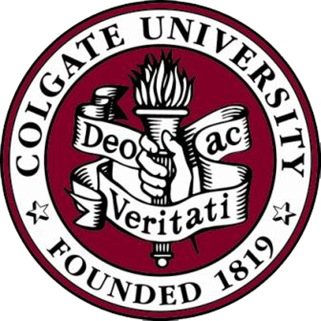
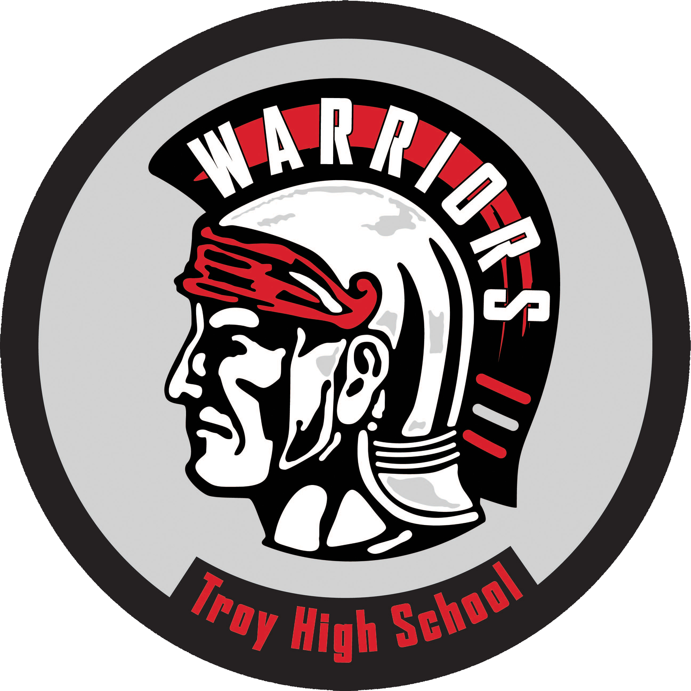
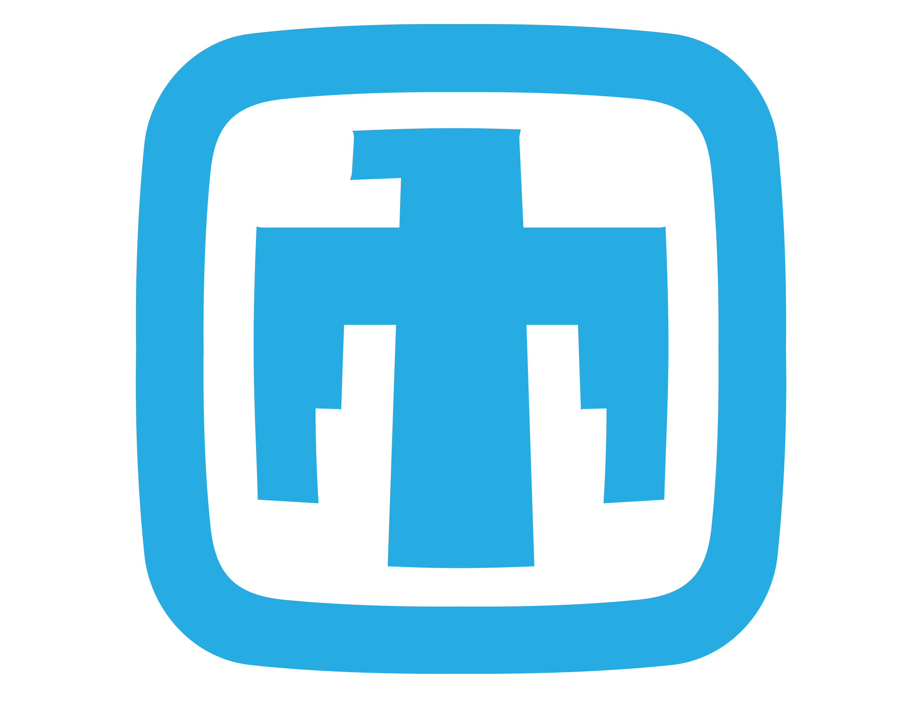
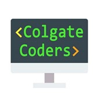
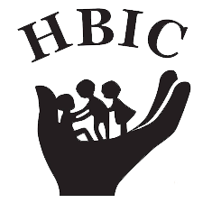
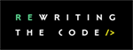
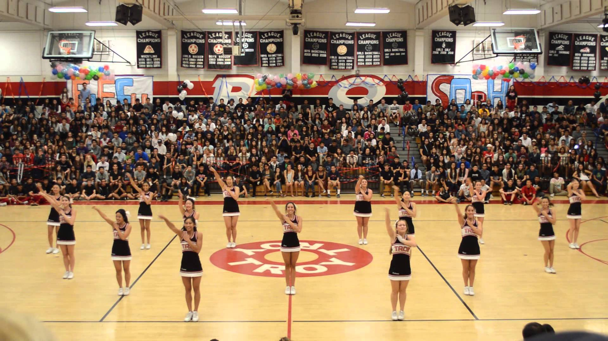
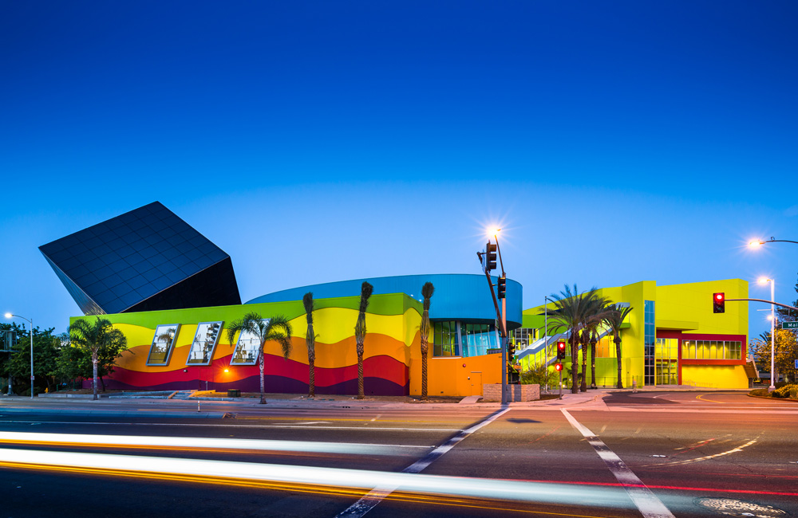

Resume

Colgate University
Hamilton, NY
Bachelor of Arts in Computer Science and Applied Mathematics
expected May 2021
CS GPA: 3.91 Applied Math GPA: 3.41 Overall GPA: 3.47
I have completed courses continuing mathematical and computational knowledge in multivariable calculus, number theory,
linear algebra, data structures, computer organization and design, discrete math, computational math, math modeling,
differential equations, and run-time optimization. I was awarded the Dean's Award for Academic Excellence
with Distinction for the Fall 2018 and Spring 2019 semesters and the Dean's Award for the Spring 2018 semester.
I am involved in a number of extracuricular activities on campus, including the cheerleading team and the Delta Delta Delta sorority.

Troy High School
Fullerton, CA
Graduated May 2017, GPA: 4.7
I earned both Full International Baccalaureate (IB) and Troy Tech Program Diplomas. As part of the Troy Tech program, I enrolled in computer science classes all four years, which included hands-on circuit wiring and a strong foundation in Object-Oriented Programming.
Through the IB Program I learned how to implement the software development life cycle. I also completed 10+ page research papers in physics, math, french, philosophy, and english, and composed a research paper on quantum computing and data securtity in pursuit of my IB Diploma.

Sandia National Laboratories
Albuquerque, NM May 2019-Present
Technical Intern, Electrical Sciences & Experiments
I am developing a user interface using the PyQt5 Python library to support analysis of the multi-agent
NAVSEA power system. I am improving the dynamic loading feature to support various Secure Scalable Microgrid (SSM)
configurations. The user interface displays real-time data in multiple easy to read forms. I am also implementing
a Python script with an interface to GIS software to automate processing, displaying, and analyzing of data on a map.

<Colgate Coders> Club
Colgate University August 2017-Present
As a member of this club, I attend events such as Git workshops, coding challenges, Command Line workshops, and Hackathons.
I hope to become more involved in the computer science community through this club in the coming years.

Help for Brain Injured Children, Inc.
La Habra, CA May 2016-July 2016
Technical Intern
HBIC is a school for children and adults with moderate to severe mental disabilities. This internship had very little structure,
therefore I could make it my own. I taught myself how to use Computer Aided Design (CAD) software and built a 3D model of the
campus, which I used to create a virtual tour. In addition to attracting new families, I celebrated graduating students by
creating slideshow presentations. I also spent hands-on time with students, and learned how to communicate with and care for them.
I attended Rotary Club meetings and other community network meetings with my mentor.
Advanced
Python
Libraries: PyQt5, pandas, NumPy, matplotlib, sklearn
Java
MATLAB
Intermediate
HTML
CSS
Git
Novice
JavaScript
XML
International Association of Engineers (IAENG)
January 2018-Present
As a member of the Societies of Artificial Intelligence, Computer Science, and Software Engineering,
I am able to stay informed on current technologies and discoveries in these areas.
National Center for Women in IT
Aspirations in Computing Award
As a member of NCWIT, I have the opportunity to encourage, give advice to, and answer questions for women in tech.
ProjectCSGIRLS
Competition Mentor February 2018-June 2018
For this competition, I mentored a middle school girl. Over a couple of months we connected via phone calls and email.
I answered her questions about planning a project and building an app from scratch, including brainstorming and prototypes.

Rewriting the Code
Fellow: August 2019-Present
Member: June 2018-Present
Rewriting the Code (RTC) is an amazing organization that aims to encourage women in STEM. As a member of this group,
I continuously learn about opportunities in the technology field. As much as I benefit from this group, I am also
able to contribute by answering questions and encouraging others. As part of the Fellowship program, I attend regular webinars
and conferences to learn about new technologies, technical career path guidance, and personal skill development from industry leaders.

Colgate Cheerleading Team
Colgate University August 2017-Present
As a member of the cheer team, I attend all home football, men's basketball, and women's basketball games. We perform during timeouts and halftimes, as well as cheering on our teams from the sidelines.
I also partake in community outreach, such as face painting at children's events and signing (in American Sign Language) the National Anthem at all football games and other Autism Awareness events.

Troy Cheerleading Team
Troy High School
Captain: April 2016-May 2017
Member: April 2014-May 2017
As captain my duties included communicating with coaches and board members, such as voicing concerns of my teammates and weekly phone calls with the Booster Club President about upcoming events and team status. I was also responsible for choreographing routines performed in front of 2,500+ students and faculty members.
I developed leadership by leading activities such as fundraising events and poster painting, scheduling practices and games, handling teammates' interpersonal relationship issues, and informing all team members, coaches, and board members of such activities and their times.

Discovery Science Center Volunteer
Santa Ana, CA February 2015-August 2016
I contributed over 120 hours volunteering at the Discovery Cube, with the purpose of exposing young children to science. My responsibilities included answering guest questions, directing guests around the center, and sharing basic science facts. I also gained an understanding of non-profits and how they work, qualities of a good volunteer, and qualities of good customer service.


{kind=link}